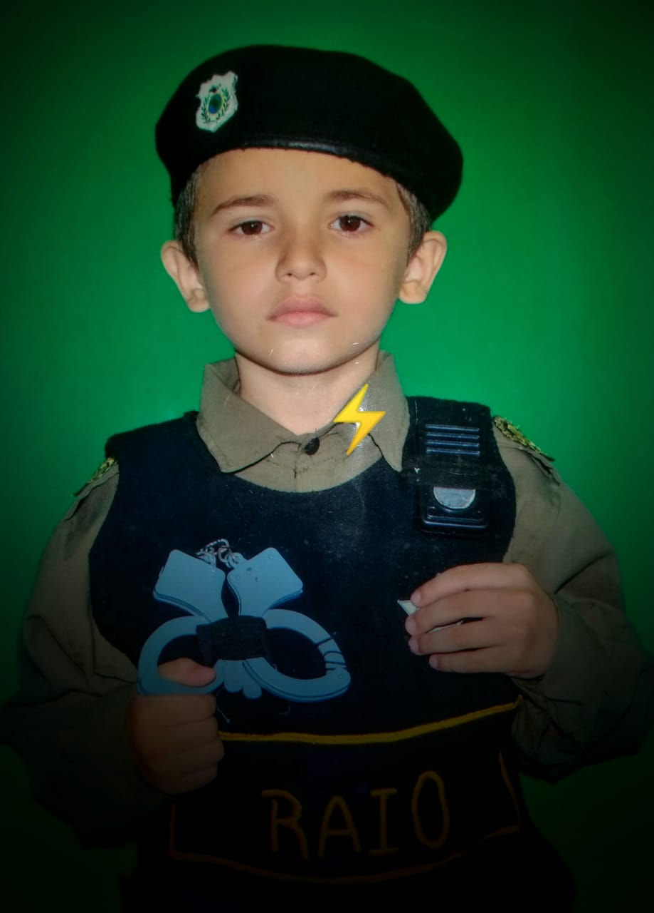

A Constituição Federal, em seu título V, Capítulo III, trata a segurança
pública. Entre os órgãos que compõem esse sistema, nós encontramos
a Polícia Rodoviária Federal. De acordo com o Constitute, essa entidade é permanente, além de ser estruturada em carreira.
Além disso, a PRF destina-se, na forma da lei, a realizar o patrulhamento ostensivo das rodovias federais.
A partir da Emenda Costitucional n 19/1988, passou-se a ter previsão que a instituição é organizada e mantida pela União.
Em primeiro lugar, é conveniente fazermos uma distinção entre os termos patrulhamento e policionamento ostentivo,
consoante o Código de Trânsito Brasileiro. Afinal, tal questão é tão polêmica e ambígua que já resultou em proposta de Emenda
Constitucinal.
